An introduction to modeltuner with examples
Mathias Ambuehl
2023-09-22
modeltuner.Rmd
library(modeltuner)
library(magrittr, warn.conflicts = FALSE) # for pipe operator
options(cv_verbose = FALSE, width = 100)Basics
The package modeltuner offers a toolkit for model evaluation, model comparison and hyperparameter tuning based on cross-validation. It applies to models for a continuous or binary response that are generated with the formula interface. In addition, it includes functionalities for conveniently fitting and tuning xgboost and glmnet models.
The formula interface
modeltuner is designed for model classes that are based
on a model-fitting functions using the formula interface in
combination with a data argument. Examples of model-fitting
functions matching this requirement are:
- in package stats:
lm(),glm(),loess(),nls() - in package robustbase:
lmrob(),glmrob(),nlrob() - in package MASS:
rlm(),lqs() - in package mgcv:
gam() - in package rpart:
rpart() - in package quantreg:
rq() - in package lme4:
lmer(),glmer()
modeltuner adds a few functions to this list which
are essentially formula-based wrappers to functions not supporting the
formula interface:
-
fm_smoothing_spline()usesstats::smooth.spline(), -
fm_knn()usesRANN::nn2()(nearest-neighbor), -
fm_xgb()usesxgboost::xgb.train() -
fm_glmnet()usesglmnet::glmnet()
The package offers some particularly attractive tools for handling
what is called iteratively fitted models (IFM) here. For such a
model, the fitting process returns not just one single model (or model
parameterization), but rather a range of models (or model
parameterizations) of increasing structural complexity. Prominent
examples –and currently the only instances implemented in the package–
are gradient boosting (as implemented in package
xgboost) and Lasso regression and elastic nets
(available from package glmnet). Refer to the dedicated
vignette (vignette("ifm")) for an overview of these
functionalities.
Fitted models and objects of class “model”
We use the term fitted model for the output of a
model-fitting function, such as lm(). In
modeltuner, models are alternatively represented as
objects of class “model”. Such a “model” object does not necessarily
contain the model fit, but it includes the information needed to refit
the model, notably the model fitting call and the complete
data.
Each model has a label used to identify it in printed output
and graphics, in particular when several models are compared. The
default label is "model", but it is recommended to
attribute an informative label to each model you create.
fm_lm_cars <- lm(dist ~ speed, cars) # fitted model
mod_lm_cars <- model(fm_lm_cars, label = "lm_cars") # 'model' object
mod_lm_cars## --- A "model" object ---
## label: lm_cars
## model class: lm
## formula: dist ~ speed
## data: data.frame [50 x 2], input as: 'data = cars'
## response_type: continuous
## call: lm(formula = dist ~ speed, data = data)
## fit: Object of class 'lm'
class(mod_lm_cars)## [1] "model_lm" "model"Note the generic setting data=data in the model
generating call of model_lm_cars in the printed output
above. This is convenient for cross-validation, where the model
generating call is repeatedly adjusted and executed internally, using
the data stored in the “model” object. A similar generic setting
weights=weights is imposed in case of a weighted model.
In order to obtain the fitted model corresponding to a given “model”
object, use fit(). In a sense, fit() is the
reverse operation of model(). fit(mod_lm_cars)
essentially executes the call mod_lm_cars$call using the
data mod_lm_cars$data.
fit(mod_lm_cars) # back to fitted models##
## Call:
## lm(formula = dist ~ speed, data = cars)
##
## Coefficients:
## (Intercept) speed
## -17.579 3.932## [1] TRUECross validation
Folds
The function make_folds() generates a set of groups for
cross validation, sometimes called “folds”. Its output essentially
consists in a list of integer vectors defining the test sets.
The complement of each test set is used as the corresponding
training set.
make_folds(cars) # 10-fold CV, the default## Validation procedure: Complete k-fold Cross-Validation
## Number of obs in data: 50
## Number of test sets: 10
## Size of test sets: 5
## Size of training sets: 45
str(make_folds(cars))## List of 10
## $ : int [1:5] 15 18 31 34 36
## $ : int [1:5] 16 33 39 40 45
## $ : int [1:5] 11 24 25 42 47
## $ : int [1:5] 6 10 21 30 49
## $ : int [1:5] 3 4 13 28 38
## $ : int [1:5] 2 7 29 43 50
## $ : int [1:5] 14 20 22 23 48
## $ : int [1:5] 8 9 27 32 35
## $ : int [1:5] 1 5 12 17 44
## $ : int [1:5] 19 26 37 41 46
## - attr(*, "class")= chr [1:2] "folds" "list"
## - attr(*, "type")= chr "complete"
## - attr(*, "n")= int 50
## - attr(*, "stratified")= logi FALSEUsing the argument nfold to create 5-fold
cross-validation:
make_folds(cars, nfold = 5)## Validation procedure: Complete k-fold Cross-Validation
## Number of obs in data: 50
## Number of test sets: 5
## Size of test sets: 10
## Size of training sets: 40Setting nfold=p with a value of p between 0
and 1 is also possible. Instead of a cross-validation, this evokes a
simple hold-out validation, where the model is fitted to the proportion
\((1-p) \cdot 100\%\) of the data and
the remaining \(p \cdot 100\%\) is used
for evaluation.
make_folds(cars, nfold = 0.3) # Simple hold-out validation with 30% of cases in test set## Validation procedure: Simple Hold-out Validation
## Number of obs in data: 50
## Number of test sets: 1
## Size of test set: 15
## Size of training set: 35Execute a cross-validation: cv()
make_folds() is used inside cv(), the core
function executing a cross-validation. By default, 10-fold CV is
performed, but this can be customized using arguments nfold
and folds,
# Executing a cross validation: cv()
cv_cars <- cv(mod_lm_cars)
cv_cars## --- A "cv" object containing 1 validated model ---
##
## Validation procedure: Complete k-fold Cross-Validation
## Number of obs in data: 50
## Number of test sets: 10
## Size of test sets: 5
## Size of training sets: 45
##
## Model:
##
## 'lm_cars':
## model class: lm
## formula: dist ~ speed
## metric: rmsecv() can also be applied directly to a fitted
model: cv(fm_lm_cars) executes
fm_lm_cars %>% model %>% cv, thus skipping the
model step. The method used in this case is
cv.default().
Evaluate a cross-validation: cv_performance()
To evaluate a “cv” object, use cv_performance():
cv_performance(cv_cars)## --- Performance table ---
## Metric: rmse
## train_rmse test_rmse time_cv
## lm_cars 15.013 14.812 0.02
cv_performance(cv_cars, metric = "medae") # alternative metric, see ?metrics## --- Performance table ---
## Metric: medae
## train_medae test_medae time_cv
## lm_cars 9.9791 10.739 0.02There are so-called “shortcut methods” of
cv_perrormance() that trigger several steps in the workflow
sketched above. Examples are cv_performance.model() or
cv_performance.default().
cv_performance.model(x) executes
x %>% cv %>% cv_performance:
cv_performance(mod_lm_cars)## --- Performance table ---
## Metric: rmse
## train_rmse test_rmse time_cv
## lm_cars 15.002 14.395 0.012The method cv_performance.default is applied to a fitted
model and executes
x %>% model %>% cv %>% cv_performance:
cv_performance(fm_lm_cars) # cv_performance.default - applied to a fitted model## --- Performance table ---
## Metric: rmse
## train_rmse test_rmse time_cv
## model 14.99 14.815 0.012A drawback of these shortcut methods is that potentially useful
interim results from cross-validation (the “cv” object) is not being
stored. It is useful to know that the result from the last execution of
cv() can be recovered at any time with
last_cv().
Saving the model fits
By default, the model fits from a cross validation are not saved. To
do so, set keep_fits = TRUE in cv():
Keep the fitted models from the cross-validation:
cv_cars_fits <- cv(mod_lm_cars, keep_fits = T)extract_fits() can now be used to obtain the model fits
from a “cv” object. Besides the model fits, the resulting table also has
column containing the folds.
(cars_fits <- extract_fits(cv_cars_fits))## folds lm_cars
## 1 <int>[5] <lm>
## 2 <int>[5] <lm>
## 3 <int>[5] <lm>
## 4 <int>[5] <lm>
## 5 <int>[5] <lm>
## 6 <int>[5] <lm>
## 7 <int>[5] <lm>
## 8 <int>[5] <lm>
## 9 <int>[5] <lm>
## 10 <int>[5] <lm>We could now extract the fitted coefficients of the 10 models as follows:
sapply(cars_fits$lm_cars, coef)## [,1] [,2] [,3] [,4] [,5] [,6] [,7] [,8]
## (Intercept) -16.434962 -18.297725 -21.183227 -13.892332 -17.339967 -18.314134 -17.175287 -19.644122
## speed 3.916652 4.000578 4.265483 3.634229 3.916122 3.969363 3.847343 3.999979
## [,9] [,10]
## (Intercept) -14.096414 -19.856576
## speed 3.731144 4.068375Multimodels
A multimodel combines several models in one object. In order to
create such a multimodel, we fit two alternative models to the
cars data.
Alternative model 1: LOESS (locally weighted polynomial regression)
with stats::loess():
fm_loess_cars <- loess(dist ~ speed, cars,
control = loess.control(surface = "direct"))(The control setting in loess() is necessary for predictions outside of the range of the training data)
Alternative model 2: regression tree with
rpart::rpart():
fm_rpart_cars <- rpart::rpart(dist ~ speed, cars)These three models are combined in a multimodel with the method
c.model():
mm_cars <- c( # method c.model(): argument names are used as model labels
lm = model(fm_lm_cars),
loess = model(fm_loess_cars),
rpart = model(fm_rpart_cars))
mm_cars## --- A "multimodel" object containing 3 models ---
##
## 'lm':
## model class: lm
## formula: dist ~ speed
## data: data.frame [50 x 2], input as: 'data = cars'
## call: lm(formula = dist ~ speed, data = data)
##
## 'loess':
## model class: loess
## formula: dist ~ speed
## data: data.frame [50 x 2], input as: 'data = cars'
## call: loess(formula = dist ~ speed, data = data, control = loess.control(surface = "direct"))
##
## 'rpart':
## model class: rpart
## formula: dist ~ speed
## data: data.frame [50 x 2], input as: 'data = cars'
## call: rpart::rpart(formula = dist ~ speed, data = data)Only models having the same response can be combined in a multimodel.
Graphical illustration of the fits of the three models:
library(ggplot2, warn.conflicts = F)
speed_seq <- seq(0, 30, .1) # grid of data points along range of 'speed'
preds_mm <- predict(mm_cars, data.frame(speed = speed_seq)) # predictions for grid data
preds_mm <- data.frame( # reshape for ggplot
speed = rep(speed_seq, 3),
model = rep(label(mm_cars), each = length(speed_seq)),
dist = as.vector(preds_mm))
ggplot(preds_mm, aes(speed, dist, color = model)) +
geom_point(data = cars, color = 8) +
geom_line(lwd = 1) +
ggtitle("cars data: comparison of model fits")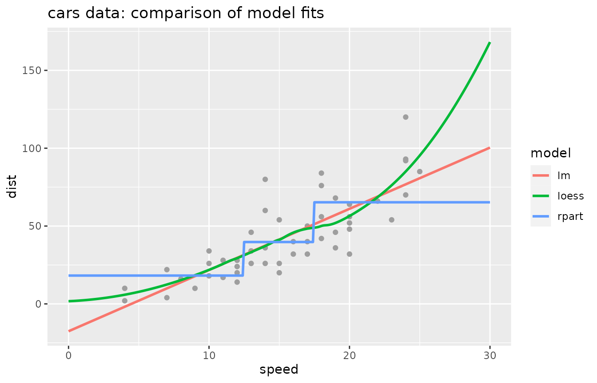
Cross-validate a multimodel
cv() and cv_performance() are applied to a
multimodel exactly as to a model. The same set of folds is thereby used
for all three cross-validations.
cv_cars <- cv(mm_cars)
cv_performance(cv_cars)## --- Performance table ---
## Metric: rmse
## train_rmse test_rmse time_cv
## lm 15.021 14.228 0.012
## loess 14.277 14.529 0.015
## rpart 16.513 15.948 0.026The output of cv(), an object of class “cv”, has a
plot() method producing a scatter plot of response versus
predicted values using the out-of-sample predictions resulting from the
cross-validation.
plot(cv_cars)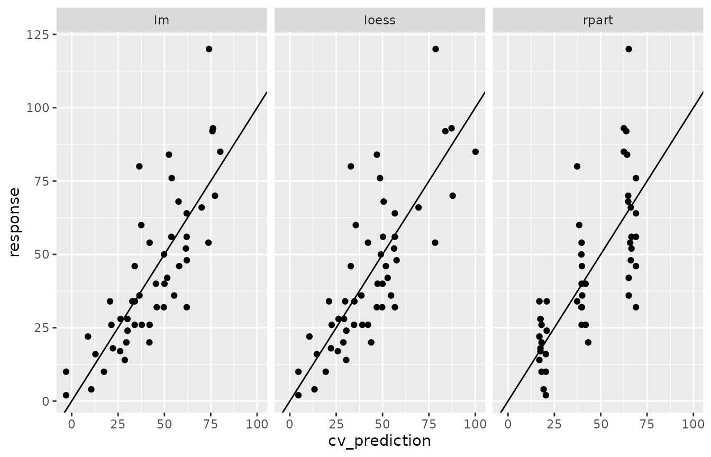
Find the best-fitting model: tune()
tune() applied to a “cv” object extracts the best
fitting model according to test performance.
# tune: pick the best model
tune(cv_cars)## --- A "model" object ---
## label: lm
## model class: lm
## formula: dist ~ speed
## data: data.frame [50 x 2], input as: 'data = cars'
## response_type: continuous
## call: lm(formula = dist ~ speed, data = data)
## fit: Object of class 'lm'##
## Call:
## lm(formula = dist ~ speed, data = cars)
##
## Coefficients:
## (Intercept) speed
## -17.579 3.932If applied to a multimodel, tune() will cross-validate
the multimodel and then return the best-fitting model. Different runs of
cv() use different folds and consequently yield varying
results, such that the “best” model picked by tune() can
vary, too. In order to impose a given set of folds, use the parameter
folds in cv():
## --- Performance table ---
## Metric: rmse
## train_rmse test_rmse time_cv
## lm 15.021 14.228 0.012
## loess 14.277 14.529 0.015
## rpart 16.513 15.948 0.026## --- Performance table ---
## Metric: rmse
## train_rmse test_rmse time_cv
## lm 15.040 14.754 0.012
## loess 14.319 14.995 0.015
## rpart 16.237 16.812 0.026Manipulation of multimodels and related objects
The modeltuner package comes with a number of
generic utility functions that are helpful for inspection and basic
manipulations of object of classes “model”, “multimodel”, “cv”,
“performance” (the output of cv_performance()) and other.
Some of these are presented in this section.
Number of models and model labels: n_model(),
label()
Query the number of models in mm_cars and their
labels:
n_model(mm_cars)## [1] 3
label(mm_cars)## [1] "lm" "loess" "rpart"Modify model labels: label<- or
set_labels()
## --- A "multimodel" object containing 3 models ---
##
## 'm1':
## model class: lm
## formula: dist ~ speed
## data: data.frame [50 x 2], input as: 'data = cars'
## call: lm(formula = dist ~ speed, data = data)
##
## 'm2':
## model class: loess
## formula: dist ~ speed
## data: data.frame [50 x 2], input as: 'data = cars'
## call: loess(formula = dist ~ speed, data = data, control = loess.control(surface = "direct"))
##
## 'm3':
## model class: rpart
## formula: dist ~ speed
## data: data.frame [50 x 2], input as: 'data = cars'
## call: rpart::rpart(formula = dist ~ speed, data = data)The parameter which allows changing only a part of the
labels:
set_label(mm_cars, which = 3, "tree") # changes only the third label (result not shown)Subsetting a multimodel or “cv” object with
subset()
subset.multimodel() subsets a multimodel. The selection
can be made with an integer, character (giving model labels) or logical
(of appropriate length) vector.
## --- A "multimodel" object containing 2 models ---
##
## 'lm':
## model class: lm
## formula: dist ~ speed
## data: data.frame [50 x 2], input as: 'data = cars'
## call: lm(formula = dist ~ speed, data = data)
##
## 'rpart':
## model class: rpart
## formula: dist ~ speed
## data: data.frame [50 x 2], input as: 'data = cars'
## call: rpart::rpart(formula = dist ~ speed, data = data)
subset(mm_cars, c("lm", "rpart")) # i is character - same result as above
subset(mm_cars, c(T, F, T)) # i is logical - same result as aboveThe methods subset.cv() and
subset.performance() work analogously.
Extraction of a model from a multimodel or “cv” object:
extract_model()
While subset.cv() yields another “cv” object,
extract_model() extracts a single model from a “cv” object
or multimodel, returning an object of class “model”.
# extract the first model
extract_model(cv_cars, 1) # i (second argument) is integer## --- A "model" object ---
## label: lm
## model class: lm
## formula: dist ~ speed
## data: data.frame [50 x 2], input as: 'data = cars'
## response_type: continuous
## call: lm(formula = dist ~ speed, data = data)
## fit: Object of class 'lm'
extract_model(cv_cars, "lm") # i is character - same result as above
extract_model(cv_cars, c(T, F, F)) # i is logical - same result as aboveNote that there is also a function extract_multimodel(),
which extracts the multimodel from a “cv” object.
Sort the models: sort_models()
# sort models
sort_models(mm_cars, c(1, 3, 2))## --- A "multimodel" object containing 3 models ---
##
## 'lm':
## model class: lm
## formula: dist ~ speed
## data: data.frame [50 x 2], input as: 'data = cars'
## call: lm(formula = dist ~ speed, data = data)
##
## 'rpart':
## model class: rpart
## formula: dist ~ speed
## data: data.frame [50 x 2], input as: 'data = cars'
## call: rpart::rpart(formula = dist ~ speed, data = data)
##
## 'loess':
## model class: loess
## formula: dist ~ speed
## data: data.frame [50 x 2], input as: 'data = cars'
## call: loess(formula = dist ~ speed, data = data, control = loess.control(surface = "direct"))
sort_models(mm_cars, c(1, 3)) # same as above (omitted index 2 is appended)Sorting by performance and execution time is also possible:
cv_performance(cv_cars) %>% sort_models(by = "test") # not for multimodels## --- Performance table ---
## Metric: rmse
## train_rmse test_rmse time_cv
## lm 15.021 14.228 0.012
## loess 14.277 14.529 0.015
## rpart 16.513 15.948 0.026
cv_performance(cv_cars) %>% sort_models(by = "time") # not for multimodels## --- Performance table ---
## Metric: rmse
## train_rmse test_rmse time_cv
## lm 15.021 14.228 0.012
## loess 14.277 14.529 0.015
## rpart 16.513 15.948 0.026n_model(), label(),
label<-, set_label(),
subset(), extract_model(),
sort_model() have specific methods for classes “model”,
“multimodel”, “cv” and “performance”. Their help topics have more
detailed information.
Hyperparameter tuning
Motivating example: Parameter k in
k-nearest-neighbor
We now use the function fm_knn() (from the modeltuner
package) to fit a k-nearest model to the mycycle data from
package MASS. The parameter k, the number
of neighbors, equals 5 by default.
data(mcycle, package = "MASS")
fm_mcycle <- fm_knn(accel ~ times, data = mcycle) # function from modeltuner; k=5 by default
fm_mcycle## k-nearest neighbors model (class 'fm_knn')
## formula: accel ~ times - 1
## data: mcycle
## k: 5
## n: 133
## standardize: TRUE
## weighted: FALSEIllustration of the model fit:
# First create a grid along the range of 'times' (used for graphs)
preddat <- data.frame(times = with(mcycle, seq(min(times), max(times), length.out = 100)))
preddat$accel <- predict(fm_mcycle, preddat)
ggplot(preddat, aes(times, accel)) +
geom_hline(yintercept = 0, lty = 3) +
geom_line(col = 2, lwd = 1) +
geom_point(data = mcycle, col = 4, alpha = 0.5)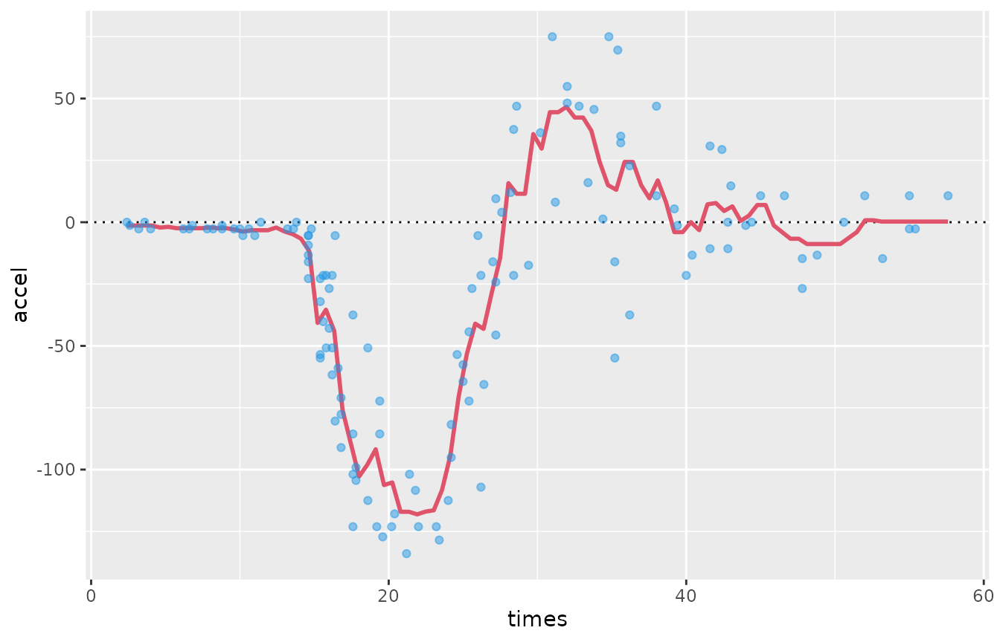
Create a multimodel with multimodel()
Next, a multimodel is generated that contains 25 “fm_knn”-models with
different choices of the parameter k:
kk <- 1:25
knn_mcycle <- multimodel(fm_mcycle, k = kk, prefix = "knn_mcycle")
knn_mcycle ## --- A "multimodel" object containing 25 models ---
##
## 'knn_mcycle1':
## model class: fm_knn
## formula: accel ~ times
## data: data.frame [133 x 2], input as: 'data = mcycle'
## call: fm_knn(formula = accel ~ times, data = data, k = 1L)
##
## 'knn_mcycle2':
## model class: fm_knn
## formula: accel ~ times
## data: data.frame [133 x 2], input as: 'data = mcycle'
## call: fm_knn(formula = accel ~ times, data = data, k = 2L)
##
## 'knn_mcycle3':
## model class: fm_knn
## formula: accel ~ times
## data: data.frame [133 x 2], input as: 'data = mcycle'
## call: fm_knn(formula = accel ~ times, data = data, k = 3L)
##
## and 22 models more, labelled:
## 'knn_mcycle4', 'knn_mcycle5', 'knn_mcycle6', 'knn_mcycle7', 'knn_mcycle8', 'knn_mcycle9',
## 'knn_mcycle10', 'knn_mcycle11', 'knn_mcycle12', 'knn_mcycle13', 'knn_mcycle14', 'knn_mcycle15',
## 'knn_mcycle16', 'knn_mcycle17', 'knn_mcycle18', 'knn_mcycle19', 'knn_mcycle20', 'knn_mcycle21',
## 'knn_mcycle22', 'knn_mcycle23', 'knn_mcycle24', 'knn_mcycle25'
##
##
## Parameter table:
## k
## knn_mcycle1 1
## knn_mcycle2 2
## knn_mcycle3 3
## ... 22 rows omitted (nrow=25)As opposed to a multimodel obtained by joining several model with
c(...), a multimodel generated with
multimodel() has a parameter table that is
displayed when the multimodel is printed, see the output above.
The multimodel mm_cycle is cross-validated:
cv_mcycle <- cv(knn_mcycle) # Uses same folds for all models
cv_performance(cv_mcycle) ## --- Performance table ---
## Metric: rmse
## k train_rmse test_rmse time_cv
## knn_mcycle1 1 17.622 33.649 0.023
## knn_mcycle2 2 18.214 27.984 0.023
## knn_mcycle3 3 19.671 26.292 0.022
## knn_mcycle4 4 20.202 25.751 0.023
## knn_mcycle5 5 20.397 25.726 0.022
## knn_mcycle6 6 20.868 25.071 0.022
## knn_mcycle7 7 21.178 25.116 0.023
## knn_mcycle8 8 21.358 24.644 0.023
## knn_mcycle9 9 21.781 24.611 0.023
## knn_mcycle10 10 22.027 24.691 0.023
## knn_mcycle11 11 22.177 24.594 0.023
## knn_mcycle12 12 22.297 24.691 0.024
## knn_mcycle13 13 22.479 24.654 0.025
## knn_mcycle14 14 22.618 24.437 0.025
## knn_mcycle15 15 22.865 24.689 0.031
## knn_mcycle16 16 23.080 24.658 0.023
## knn_mcycle17 17 23.290 24.732 0.023
## knn_mcycle18 18 23.518 25.060 0.023
## knn_mcycle19 19 23.816 25.436 0.024
## knn_mcycle20 20 24.136 25.404 0.024
## knn_mcycle21 21 24.391 25.546 0.023
## knn_mcycle22 22 24.699 26.009 0.024
## knn_mcycle23 23 25.031 26.311 0.024
## knn_mcycle24 24 25.520 26.664 0.024
## knn_mcycle25 25 25.932 27.045 0.026Note that the column(s) of the parameter table, k in our
example, are included in the output of
cv_performance().
Plot a performance table
The output of cv_performance() is a performance table,
of class “performance”. Its plot() method displays a bar
chart by default.
cv_performance(cv_mcycle) %>% plot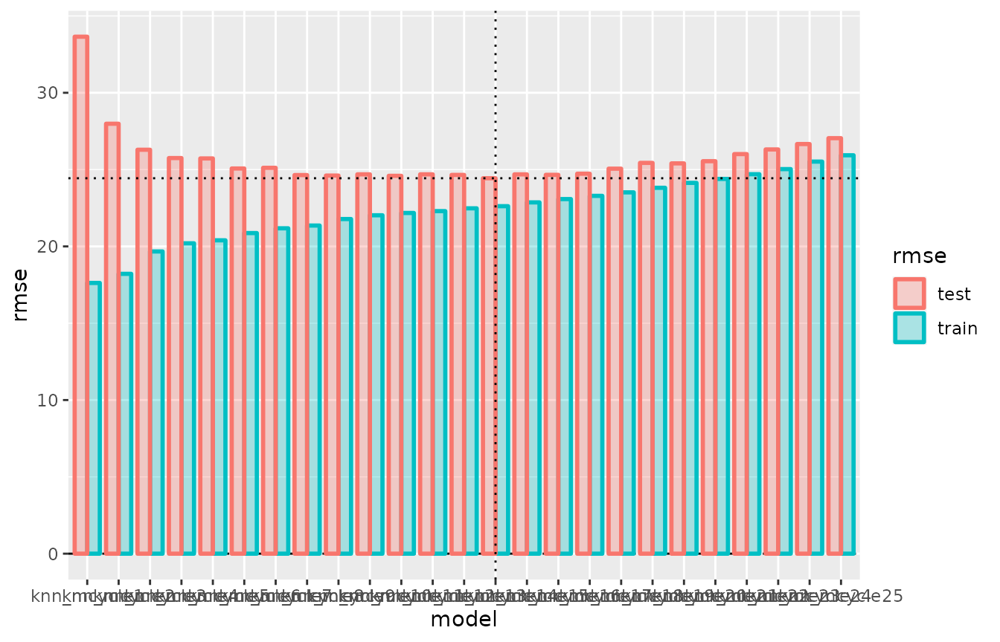
The vertical dotted line identifies the best-fitting model (w.r.t.
test error), i.e. the model that tune() would pick. The
horizontal dotted line shows the test error of this model.
In this example, the visual appearance of the plot can be improved by
setting the parameter xvar:
cv_performance(cv_mcycle) %>% plot(xvar = "k") # xvar a column of the performance table 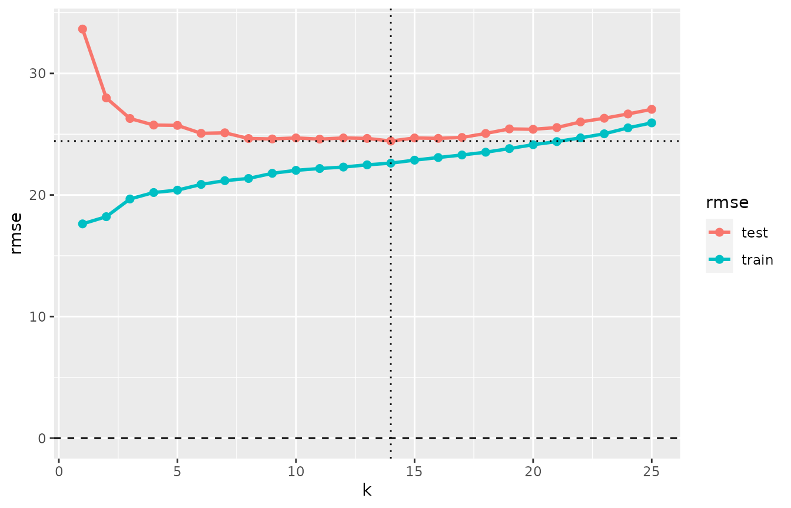
Note that the training error of the 1-nearest neighbor model is
larger than zero. This is due to the presence of bindings
mcycle$times. Without bindings, the curve representing the
training error would start at a value of zero.
The next plot compares the model fits for a custom selection of four
values of k:
preds <- predict(subset(knn_mcycle, c(1, 5, 10, 25)), preddat)
data.frame(
model = factor(rep(colnames(preds), each = nrow(preds)),
levels = paste0("knn_mcycle", c(1, 5, 10, 25))),
times = preddat$times,
accel = as.vector(preds)) %>%
ggplot(aes(times, accel)) +
facet_wrap(~ model) +
geom_hline(yintercept = 0, lty = 3) +
geom_line(col = 2, lwd = 1) +
geom_point(data = mcycle, col = 4, alpha = 0.5)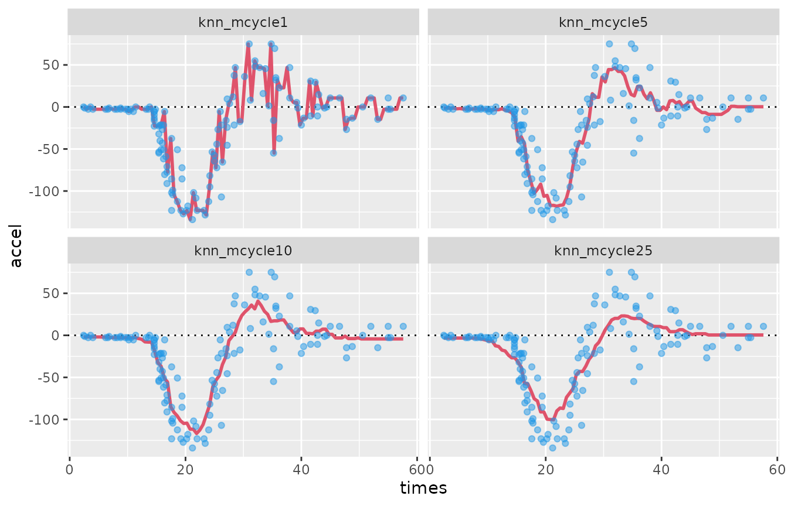
Plot methods for (multi-)model and “cv”:
The methods plot.model(), plot.multimodel()
and plot.cv() generate scatter plots (ggplots) of actual
responses versus predictions. plot.model() uses (in-sample)
predictions from a single model fit, while plot.cv()
displays the out-of-sample predictions resulting from the
cross-validation.
i <- 1 # 1-nearest neighbor
gridExtra::arrangeGrob(
plot(subset(knn_mcycle, i)) + # fits the model and plots response vs. fitted
ggtitle("plot.model: in-sample fit of 1-NN"),
plot(subset(cv_mcycle, i)) + # plots response vs. cv-fits
ggtitle("plot.cv: out-of-sample fit"),
nrow = 1) %>% plot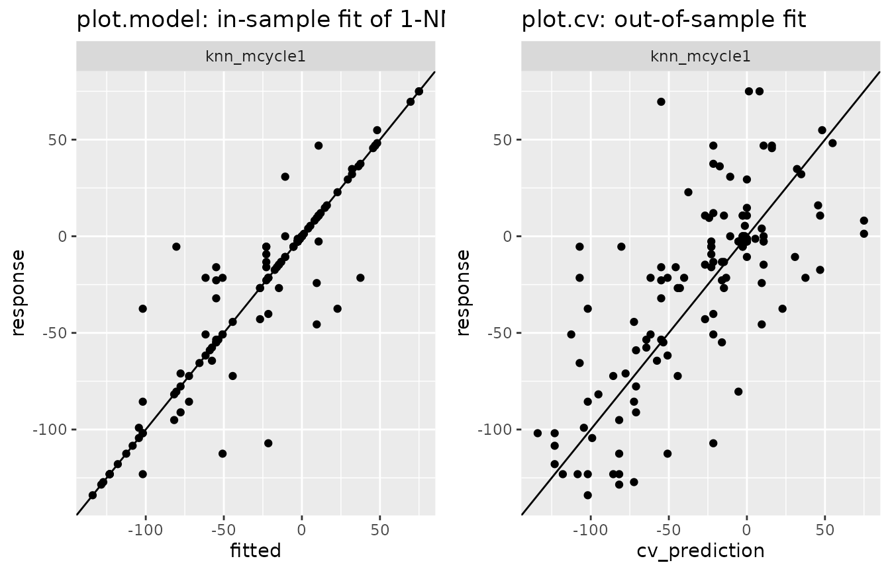
Plotting a multimodel or “cv” object including several models creates the same type of plot with one panel/facet for each model.
tune() a parameter
Starting from the cv object:
tune() is a generic function, and it method
tune.cv() simply selects the best model according to test
error, thus returning a “model” object:
tune(cv_mcycle) # Selects the best model according to test error## --- A "model" object ---
## label: knn_mcycle14
## model class: fm_knn
## formula: accel ~ times
## data: data.frame [133 x 2], input as: 'data = mcycle'
## response_type: continuous
## call: fm_knn(formula = accel ~ times, data = data, k = 14L)## k-nearest neighbors model (class 'fm_knn')
## formula: accel ~ times - 1
## data: data
## k: 14
## n: 133
## standardize: TRUE
## weighted: FALSE“Shortcut methods” tune.model() and
tune.default()
tune.model() takes an object of class “model” and
returns a “tuned” version.
mod_mcycle <- model(fm_mcycle)
mod_mcycle %>% tune(k = 1:25) # "Dots" in tune(x, ...) are passed to multimodel()## --- A "model" object ---
## label: model9
## model class: fm_knn
## formula: accel ~ times
## data: data.frame [133 x 2], input as: 'data = mcycle'
## response_type: continuous
## call: fm_knn(formula = accel ~ times, data = data, k = 9L)The code line mod_mcycle %>% tune(k = 1:25) executes
mod_mcycle %>% multimodel(k = 1:25) %>% cv %>% tune.
Likewise, tune.default() takes a fitted model and
returns a fitted model (result not shown).
This runs
fm_mcycle %>% model %>% multimodel(k = 1:20) %>% cv %>% tune %>% fit
Binary response
We now fit a glm to the kyphosis data from
package rpart:
## Kyphosis Age Number Start
## 1 absent 71 3 5
## 2 absent 158 3 14
## 3 present 128 4 5
## 4 absent 2 5 1
## 5 absent 1 4 15
## 6 absent 1 2 16
table(kyphosis$Kyphosis)##
## absent present
## 64 17
# glm model (fitted model)
glmmod <- glm(Kyphosis == "present" ~ ., kyphosis, family = "binomial")
summary(glmmod)##
## Call:
## glm(formula = Kyphosis == "present" ~ ., family = "binomial",
## data = kyphosis)
##
## Coefficients:
## Estimate Std. Error z value Pr(>|z|)
## (Intercept) -2.036934 1.449575 -1.405 0.15996
## Age 0.010930 0.006446 1.696 0.08996 .
## Number 0.410601 0.224861 1.826 0.06785 .
## Start -0.206510 0.067699 -3.050 0.00229 **
## ---
## Signif. codes: 0 '***' 0.001 '**' 0.01 '*' 0.05 '.' 0.1 ' ' 1
##
## (Dispersion parameter for binomial family taken to be 1)
##
## Null deviance: 83.234 on 80 degrees of freedom
## Residual deviance: 61.380 on 77 degrees of freedom
## AIC: 69.38
##
## Number of Fisher Scoring iterations: 5
model object
In modeltuner, a binary response is expected to have
values 0 and 1. If this is the case, the response_type will
be “binary” (otherwise “continuous”), and cv_performance()
will use the logLoss metric by default (in contrast to
rmse for a continuous response). See ?metrics
and ?default_metric for more information.
mod1_kyph <- model(glmmod, label = "glm")
mod1_kyph## --- A "model" object ---
## label: glm
## model class: glm
## formula: Kyphosis == "present" ~ Age + Number + Start
## data: data.frame [81 x 4], input as: 'data = kyphosis'
## response_type: binary
## call: glm(formula = Kyphosis == "present" ~ ., family = "binomial", data = data)
## fit: Object of classes 'glm', 'lm'Cross-validate and evaluate result
Below, mod1_kyph is cross-validated and the result is
evaluated with the default metric and a standard metric.
cv_kyph <- cv(mod1_kyph)
cv_performance(cv_kyph)## --- Performance table ---
## Metric: logLoss
## train_logLoss test_logLoss time_cv
## glm 0.37571 0.44412 0.024
cv_performance(cv_kyph, metric = list(cl_err = classification_error)) ## --- Performance table ---
## Metric: cl_err
## train_cl_err test_cl_err time_cv
## glm 0.15638 0.22222 0.024Plot of a model/multimodel/cv in case of binary response:
plot.model() and plot.cv() generate two
separate violin plots of predicted values for the two groups of
observations having response value 0 and 1:
# plot.(multi)model and plot.cv in binary case
gridExtra::arrangeGrob(
plot(mod1_kyph) + ggtitle("plot.model: glm model"),
plot(mod1_kyph %>% cv) + ggtitle("plot.cv: glm model"),
nrow = 1) %>% plot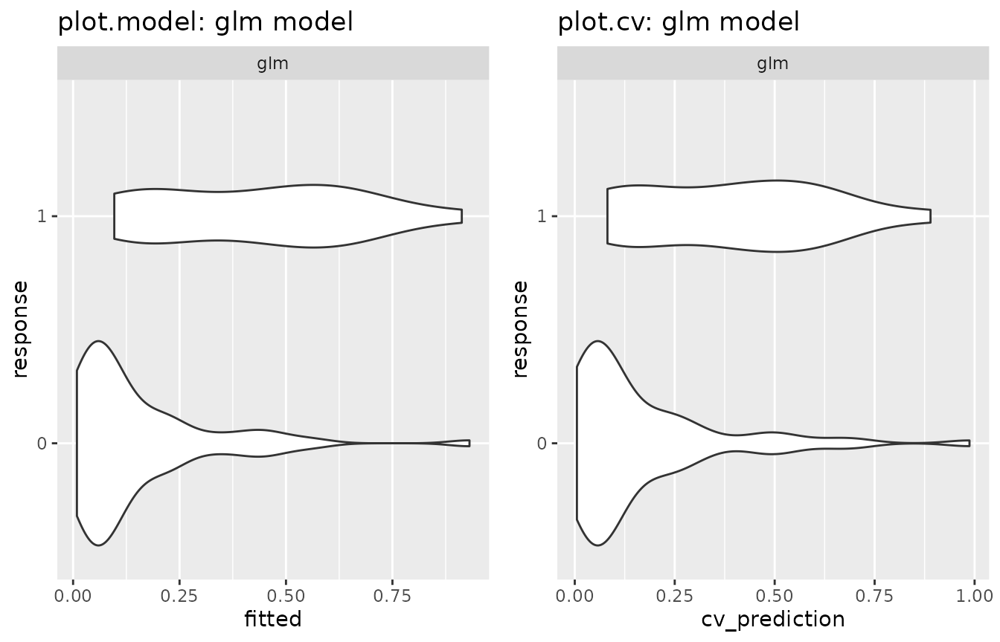
Alternative model: ranger
As an second model in the kyphosis example, ranger() is
used to fit a random forest:
library(ranger)
# without fitting the model...
mod2_kyph <- model("ranger", Kyphosis == "present" ~ ., kyphosis,
num.trees = 100, max.depth = 4,
class = "ranger", label = "ranger")The plot below shows that the random forest overfits the data in this example:
gridExtra::arrangeGrob(
plot(mod2_kyph) + ggtitle("plot.model"), # overfits
plot(cv(mod2_kyph)) + ggtitle("plot.cv"),
nrow = 1) %>% plot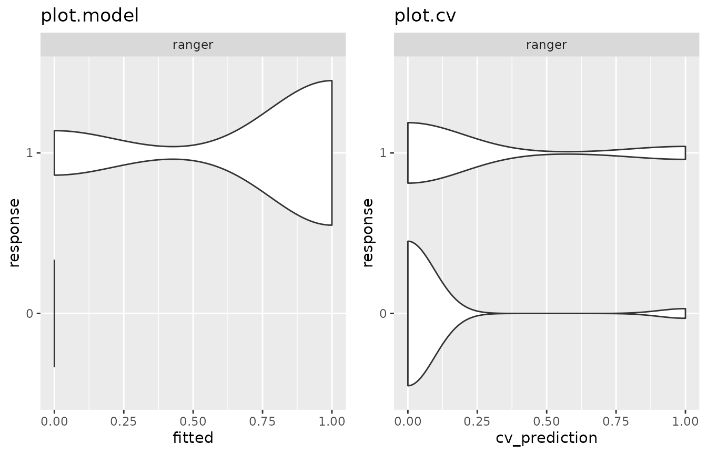
Combine the two models in a multimodel
# cv_performance
mm_kyph <- c(mod1_kyph, mod2_kyph)
cv_performance(mm_kyph)## --- Performance table ---
## Metric: logLoss
## train_logLoss test_logLoss time_cv
## glm 0.37465 0.46969 0.026
## ranger 2.46928 7.71019 0.065Variable selection procedures based on cross-validation
The modeltuner package has a collection of functions that modify a given model by adding or removing variables from the formula and optionally cross-validate them.
For the sake of more compact formulas in printed output, we first
introduce a variable transformation in kyphosis and
redefine the model mod1_kyph:
mod1_kyph <- update(mod1_kyph,
data = transform(kyphosis,
kyphosisFlag = Kyphosis == "present"),
formula = kyphosisFlag ~ .)Combine all models resulting from removing or adding one variable
-
step_reduce()includes all models resulting from removing one variable from the full model, -
step_extend()includes all models resulting from adding one variable to base model.
The full model and base model are defined in the
parameters formula1 and formula2. When
formula1 and formula2 are not given by the
user, the actual model is taken as the full model and a bare intercept
model as the base model. See ?stepwise for more details.
step_reduce() and step_extend() return a “cv”
object if the argument cv is TRUE (the
default) or a multimodel if cv=FALSE.
step_reduce(mod1_kyph, cv = FALSE) # remove one variable from full model## --- A "multimodel" object containing 3 models ---
##
## '-Age':
## model class: glm
## formula: kyphosisFlag ~ Number + Start
## data: data.frame [81 x 5],
## input as: 'data = transform(kyphosis, kyphosisFlag = Kyphosis == "present")'
## call: glm(formula = kyphosisFlag ~ Number + Start, family = "binomial", data = data)
##
## '-Number':
## model class: glm
## formula: kyphosisFlag ~ Age + Start
## data: data.frame [81 x 5],
## input as: 'data = transform(kyphosis, kyphosisFlag = Kyphosis == "present")'
## call: glm(formula = kyphosisFlag ~ Age + Start, family = "binomial", data = data)
##
## '-Start':
## model class: glm
## formula: kyphosisFlag ~ Age + Number
## data: data.frame [81 x 5],
## input as: 'data = transform(kyphosis, kyphosisFlag = Kyphosis == "present")'
## call: glm(formula = kyphosisFlag ~ Age + Number, family = "binomial", data = data)
##
## Parameter table:
## formula
## -Age kyphosisFlag ~ Number + Start
## -Number kyphosisFlag ~ Age + Start
## -Start kyphosisFlag ~ Age + Number
step_extend(mod1_kyph, cv = FALSE) # add one variable to base model## --- A "multimodel" object containing 3 models ---
##
## '+Age':
## model class: glm
## formula: kyphosisFlag ~ Age
## data: data.frame [81 x 5],
## input as: 'data = transform(kyphosis, kyphosisFlag = Kyphosis == "present")'
## call: glm(formula = kyphosisFlag ~ Age, family = "binomial", data = data)
##
## '+Number':
## model class: glm
## formula: kyphosisFlag ~ Number
## data: data.frame [81 x 5],
## input as: 'data = transform(kyphosis, kyphosisFlag = Kyphosis == "present")'
## call: glm(formula = kyphosisFlag ~ Number, family = "binomial", data = data)
##
## '+Start':
## model class: glm
## formula: kyphosisFlag ~ Start
## data: data.frame [81 x 5],
## input as: 'data = transform(kyphosis, kyphosisFlag = Kyphosis == "present")'
## call: glm(formula = kyphosisFlag ~ Start, family = "binomial", data = data)
##
## Parameter table:
## formula
## +Age kyphosisFlag ~ Age
## +Number kyphosisFlag ~ Number
## +Start kyphosisFlag ~ StartBackward elimination and forward selection
-
step_forward()appliesstep_extend()repeatedly, selecting the best model w.r.t. test error at each step, thus performing a forward selection of variables. -
step_backward()appliesstep_reduce()repeatedly, selecting the best model w.r.t. test error at each step, thus performing a backward elimination of variables.
Backward elimination:
(backwd <- step_backward(mod1_kyph))## --- A "cv" object containing 4 validated models ---
##
## Validation procedure: Complete k-fold Cross-Validation
## Number of obs in data: 81
## Number of test sets: 10
## Size of test sets: ~8
## Size of training sets: ~73
##
## Models:
##
## 'full':
## model class: glm
## formula: kyphosisFlag ~ Age + Number + Start
## metric: logLoss
##
## '-Number':
## model class: glm
## formula: kyphosisFlag ~ Age + Start
## metric: logLoss
##
## '-Age':
## model class: glm
## formula: kyphosisFlag ~ Start
## metric: logLoss
##
## and 1 model more, labelled:
## '-Start'
##
##
## Parameter table:
## formula
## full kyphosisFlag ~ Age + Number + Start
## -Number kyphosisFlag ~ Age + Start
## -Age kyphosisFlag ~ Start
## -Start kyphosisFlag ~ 1
cv_performance(backwd)## --- Performance table ---
## Metric: logLoss
## formula train_logLoss test_logLoss time_cv
## full kyphosisFlag ~ Age + Number + Start 0.37638 0.43046 0.032
## -Number kyphosisFlag ~ Age + Start 0.40207 0.42260 0.021
## -Age kyphosisFlag ~ Start 0.41942 0.43510 0.019
## -Start kyphosisFlag ~ 1 0.51356 0.51815 0.017Plot the performance table of backwd:
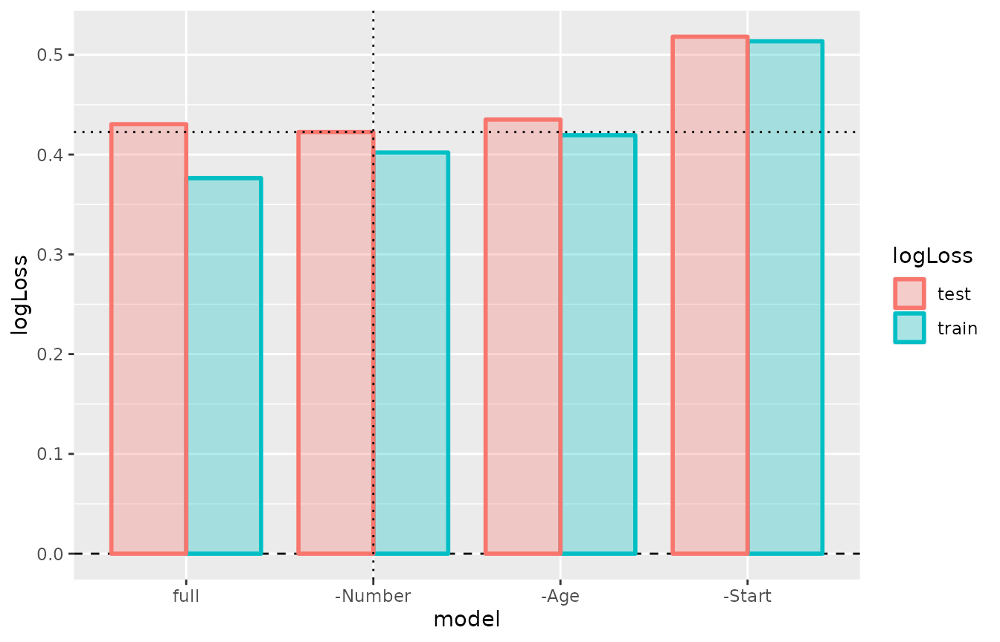
Forward selection:
forwd <- step_forward(mod1_kyph)Best subset model selection
best_subset() combines submodels of the full model in a
multimodel and subjects it to cv(). The desired range of
the model sizes (number of regressors) to include is specified in the
parameter nvars. best_subset() returns either
a “cv” object (if cv=TRUE, default) or a multimodel,
depending on parameter cv.
# best subset selection
(bestsub <- best_subset(mod1_kyph, nvars = 1:2))## --- A "cv" object containing 6 validated models ---
##
## Validation procedure: Complete k-fold Cross-Validation
## Number of obs in data: 81
## Number of test sets: 10
## Size of test sets: ~8
## Size of training sets: ~73
##
## Models:
##
## '+Age':
## model class: glm
## formula: kyphosisFlag ~ Age
## metric: logLoss
##
## '+Number':
## model class: glm
## formula: kyphosisFlag ~ Number
## metric: logLoss
##
## '+Start':
## model class: glm
## formula: kyphosisFlag ~ Start
## metric: logLoss
##
## and 3 models more, labelled:
## '+Age+Number', '+Age+Start', '+Number+Start'
##
##
## Parameter table:
## formula
## +Age kyphosisFlag ~ Age
## +Number kyphosisFlag ~ Number
## +Start kyphosisFlag ~ Start
## ... 3 rows omitted (nrow=6)
bestsub %>%
cv_performance %>%
sort_models(by = "test") %>% # sort models by test error
plot +
theme(axis.text.x = element_text(angle = 30, vjust = 1, hjust=1))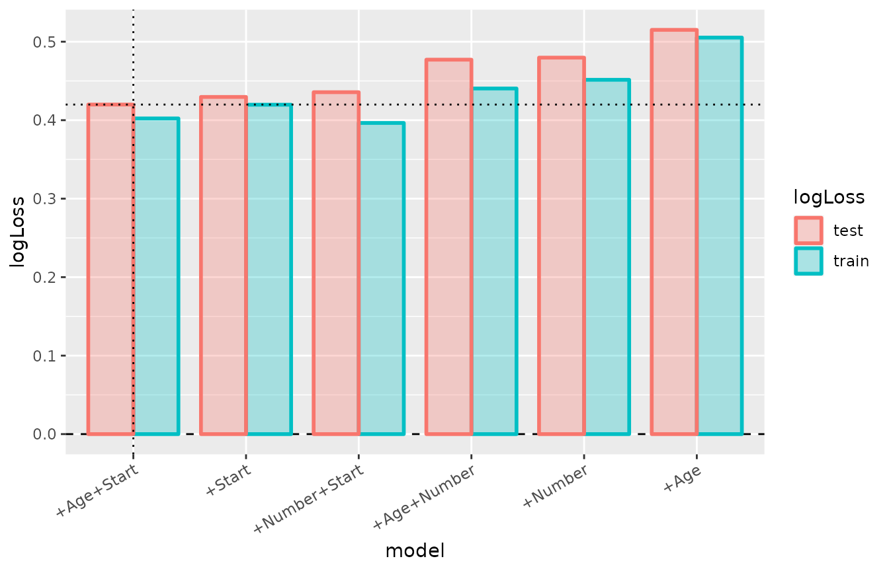